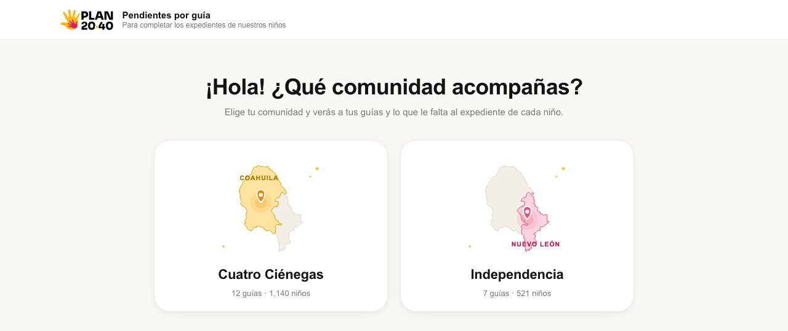
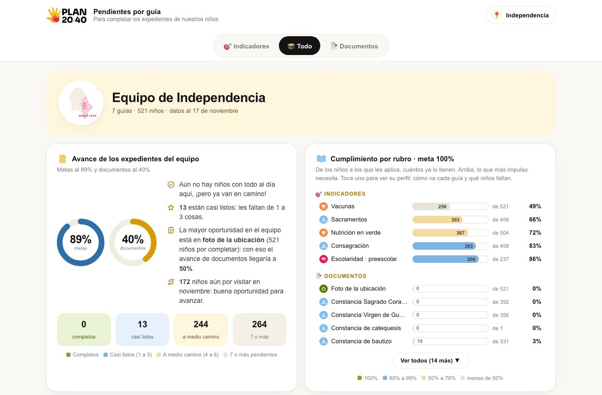
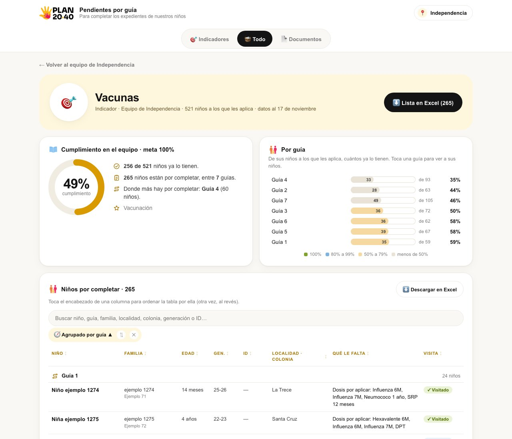
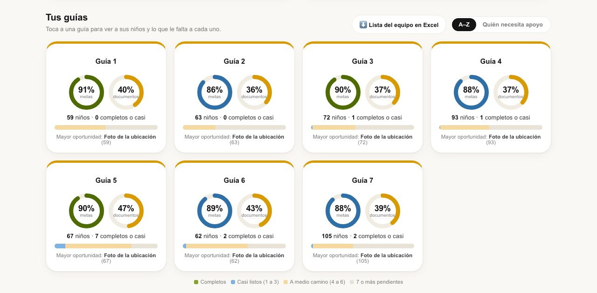
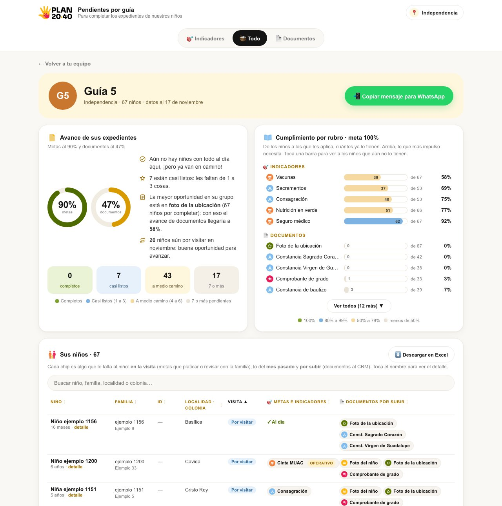
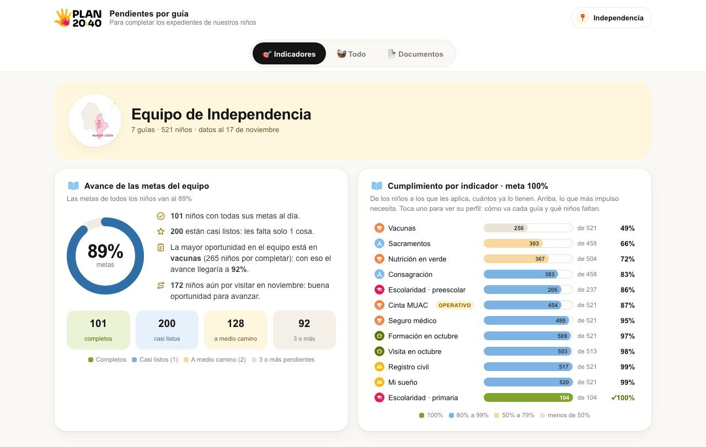

Manual de Pendientes por Guía
Para guías y coordinadoras: cómo leer el avance de los expedientes, qué quiere decir cada chip y cómo usar el perfil de un rubro, el Excel y el mensaje de WhatsApp.
1¿Para qué sirve?
Es la vista para las guías y sus coordinadoras: eligen su comunidad y ven qué tan completo está el expediente de cada niño, guía por guía, y qué le falta a cada uno para la próxima visita.
El expediente tiene dos partes:
- 🎯 Metas: las metas oficiales del Tablero de Metas (sueño, registro civil, escolaridad, seguro médico, vacunas, nutrición, sacramentos, consagración, visita y formación).
- 📄 Documentos: los archivos que hay que subir al CRM (foto del niño, CURP, acta, aviso de privacidad, foto de la ubicación, constancias…).
Está hecho para usarse también en el celular.
2¿De dónde viene la información?
- escolaridad preescolar (3 a 5 años) y primaria (6 a 11 años), con la regla de la SEP;
- vacunación según los Lineamientos 2026;
- nutrición con la Cartilla Nacional;
- sacramentos = Bautismo y 1ª Comunión;
- consagración = al menos una, Sagrado Corazón o Virgen de Guadalupe.
- de 2 meses a 1 año, cada mes;
- de 13 meses a 2 años, cada 3 meses;
- de 2 años en adelante, cada 6 meses.
3Cómo moverte en el reporte

- Elige tu comunidad: Cuatro Ciénegas o Independencia. Cada tarjeta dice cuántas guías y niños tiene.
- Arriba están las pestañas 🎯 Indicadores · 🧺 Todo · 📄 Documentos. El reporte siempre abre en Todo. Más abajo se explica cada pestaña: las tres pestañas.
- Con el botón 📍 de la comunidad, arriba a la derecha, regresas a elegir comunidad.
- Toca una guía para ver a sus niños, o toca un rubro (una barra) para ver su perfil. Con ← Volver regresas al equipo.
4El resumen del equipo

- Los dos anillos:
- Metas es el promedio del Tablero: un parcial vale medio punto, y «no aplica» y «sin medición» no cuentan.
- Documentos es la parte de los archivos que ya está completa.
- Las frases dicen:
- cuántos niños ya tienen todo;
- cuántos están casi listos;
- la mayor oportunidad: el rubro con más niños por completar, y hasta dónde subiría el avance si se completara;
- cuántos niños faltan por visitar este mes.
- Los cuatro cuadros reparten a los niños según cuántas cosas les faltan. El corte de cada cuadro cambia con la pestaña:
| Pestaña | Completos | Casi listos | A medio camino | Más pendientes |
|---|---|---|---|---|
| 🧺 Todo | No le falta nada | 1 a 3 cosas | 4 a 6 | 7 o más |
| 🎯 Indicadores | Todas sus metas | Le falta 1 | Le faltan 2 | 3 o más |
| 📄 Documentos | Todos sus documentos | 1 a 2 | 3 a 4 | 5 o más |
5Cumplimiento por rubro y su perfil
- Cada barra es un rubro: una meta o un documento. Dice, de los niños a los que les aplica, cuántos ya lo tienen. La meta de todos es 100 %.
- Primero van los indicadores y después los documentos. En cada grupo, arriba va lo que más impulso necesita. Ver todos abre los demás rubros.
- El ícono de cada rubro es su pilar.
- El color de la barra: verde = 100 %, azul = 80 % a 99 %, amarillo = 50 % a 79 %, gris = menos de 50 %.

En el resumen del equipo, al tocar un rubro se abre su perfil:
- Cumplimiento en el equipo: cuántos niños ya lo tienen, cuántos faltan, entre cuántas guías, y dónde hay más por completar.
- Por guía: una barra por guía. Al tocar una se abre esa guía, con su lista filtrada a ese rubro.
- Niños por completar: la tabla de quién falta, agrupada por guía, con qué le falta exactamente (por ejemplo, las dosis por aplicar) y si ya se visitó este mes.
- ⬇️ Lista en Excel descarga esa tabla.
Dentro de una guía, tocar una barra filtra su lista a los niños que aún no tienen ese rubro.
6Tus guías

- Cada tarjeta trae los dos anillos de la guía (metas y documentos) y cuántos niños tiene. También dice cuántos están completos o casi.
- La barra reparte a sus niños en los cuatro grupos: completos, casi listos, a medio camino y más pendientes.
- Abajo viene su mayor oportunidad: el rubro con más niños por completar.
- A–Z ordena por nombre. Quién necesita apoyo pone primero a las que van más atrás; en Todo se fija en el más bajo de sus dos porcentajes.
- ⬇️ Lista del equipo en Excel descarga a todos los niños del equipo con sus pendientes.
7Los niños de una guía

Arriba ves el mismo resumen que el del equipo, pero solo con sus niños. Debajo está la tabla Sus niños, con estas columnas:
- Niño: nombre y edad.
- Familia, ID del CRM y Localidad · colonia.
- Visita: Por visitar, ✓ Visitado este mes o 🌙 Descansa. «Descansa» es una familia bimestral a la que no le toca visita este mes.
- 🎯 Metas e indicadores y 📄 Documentos por subir: un chip por cada cosa que le falta. ✓ Al día quiere decir que no le falta nada de esa parte.
Hay tres tipos de chip:
- En la visita: metas que hay que platicar o revisar con la familia.
- Mes pasado: «Sin visita» o «Sin formación» en el mes cerrado. Tienen otro color.
- Por subir: documentos que faltan en el CRM.
| Chip | Qué le falta |
|---|---|
| Mi sueño · Registro civil | Las metas de Sueño y Registro Civil del Tablero. |
| Preescolar · Primaria | Escolaridad. Aplica de 3 a 5 años (preescolar) y de 6 a 11 años (primaria). |
| Seguro médico | Derechohabiencia o seguro público. |
| Vacunas | Esquema al corriente según los Lineamientos 2026. El detalle dice qué dosis faltan. |
| Medir peso y talla | No tiene medición nutricional vigente. No aparece en Independencia, donde la cinta MUAC ya dice cuándo le toca medirse. |
| Nutrición en seguimiento | Su medición está fuera de rango: no está en verde. |
| Sacramentos | Bautismo y 1ª Comunión. El detalle dice cuál falta. |
| Consagración | Al menos una: Sagrado Corazón o Virgen de Guadalupe. |
| Cinta MUAC OPERATIVO | Solo en Independencia. Ya le toca medirse con la cinta. |
| Sin visita · Sin formación (mes pasado) | No tuvo visita o formación en el mes cerrado. |
- Toca el nombre (o «detalle») para ver qué le falta exactamente: dosis, sacramento, días desde la última cinta… También salen su generación, su ID y el teléfono de la familia.
- Buscar filtra por niño, familia, localidad o colonia.
- Para ordenar, toca el encabezado de una columna; tócalo otra vez para invertir el orden. Al ordenar por Familia, los niños se agrupan por familia. En el celular hay un selector «Ordenar».
- Al abrir, la lista va por visitar primero y luego por localidad, colonia y familia, para armar la ruta.
8Las tres pestañas
Las tres usan las mismas guías y los mismos niños; cambia qué parte del expediente se cuenta. Da clic en una para ver qué responde.
🧺 Todo¿Qué le falta a cada niño, metas y documentos juntos?
- Es la pestaña con la que abre el reporte. Sirve para preparar la visita: en un solo lugar sale lo que hay que revisar con la familia y lo que hay que subir al CRM.
- Se ven los dos anillos (metas y documentos) y los rubros de las dos partes.
- Un niño cuenta como completo solo si tiene todas sus metas y todos sus documentos.
🎯 Indicadoresa fondo¿Cómo van las metas del Tablero?

- Solo cuenta las metas. El anillo es el promedio del Tablero de Metas.
- Trae todas las metas: sueño, registro civil, escolaridad (preescolar y primaria por separado), seguro médico, vacunas, nutrición, sacramentos, consagración, y la visita y formación del mes cerrado.
- En Independencia se suma la cinta MUAC.
📄 Documentos¿Qué archivos faltan por subir al CRM?
- Solo cuenta los documentos. El anillo es la parte de los archivos que ya está completa.
- Un documento aplica según la regla del CRM, igual que en Pendientes por Niño. Por ejemplo, las constancias de sacramentos solo aplican a quien corresponde.
- La foto de la cartilla sale de las cartillas subidas al CRM.
9Excel y WhatsApp
- Excel en tres niveles:
- ⬇️ Lista del equipo en Excel: todos los niños de la comunidad.
- ⬇️ Descargar en Excel dentro de una guía: sus niños, con el filtro o la búsqueda que tengas.
- ⬇️ Lista en Excel en el perfil de un rubro: los niños que lo deben.
- El Excel de una guía o del equipo trae siempre las dos partes, metas y documentos, aunque estés en otra pestaña. Incluye guía, familia, localidad, colonia, teléfono, niño, edad, visita del mes, qué documentos y qué metas le faltan, sus porcentajes, la cinta MUAC y el detalle.
- 📲 Copiar mensaje para WhatsApp, dentro de una guía, copia un mensaje listo para pegar. Lleva:
- cómo van sus niños;
- su mayor oportunidad y cuánto subiría su avance;
- la lista de sus niños casi listos, con lo que le falta a cada uno;
- los rubros que ya tiene al 100 %;
- los tres rubros donde más puede avanzar.
10Preguntas frecuentes
¿Por qué casi ningún niño sale «completo»?
En «Todo», un niño cuenta como completo solo si tiene todas sus metas y todos sus documentos. Para ver cada parte por separado, cambia a la pestaña Indicadores o a Documentos.
Subí un documento y sigue como pendiente
El reporte se actualiza con la descarga semanal del CRM, así que aparecerá completo en el siguiente corte. Revisa también que se haya subido en el campo correcto del perfil.
¿Por qué el % de metas de Independencia no es igual al del Tablero?
Porque en Independencia se suma la cinta MUAC, que es un indicador operativo de las guías y no está en el Tablero. En Cuatro Ciénegas las metas son las mismas que en el Tablero.
¿Qué quiere decir «🌙 Descansa»?
Que la familia es bimestral y este mes no le toca visita. No cuenta como pendiente de visita.
¿En qué se distingue de Pendientes por Niño?
Usan las mismas reglas. Pendientes por Niño es la vista general con filtros, para cerrar capturas por documento o por indicador. Este reporte está pensado para que cada guía y su coordinadora vean a sus niños, uno por uno, con lo que le falta a cada uno.